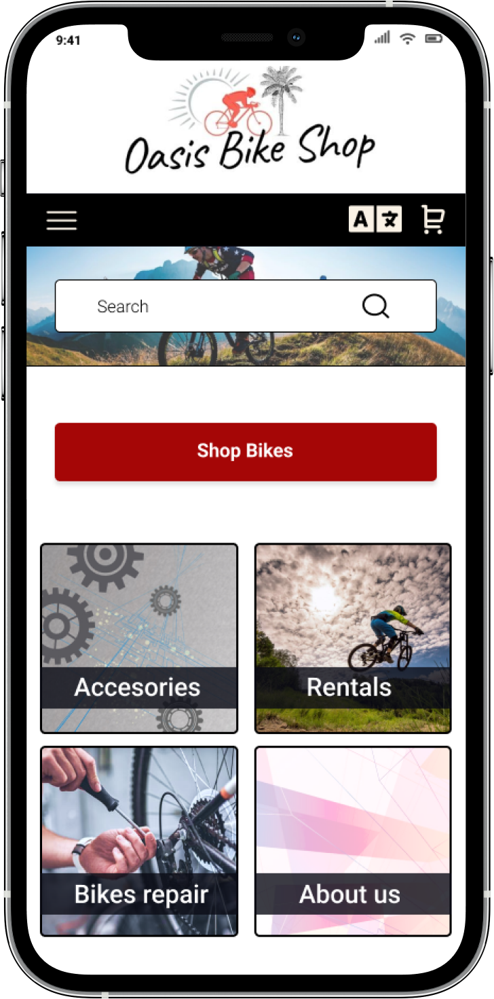
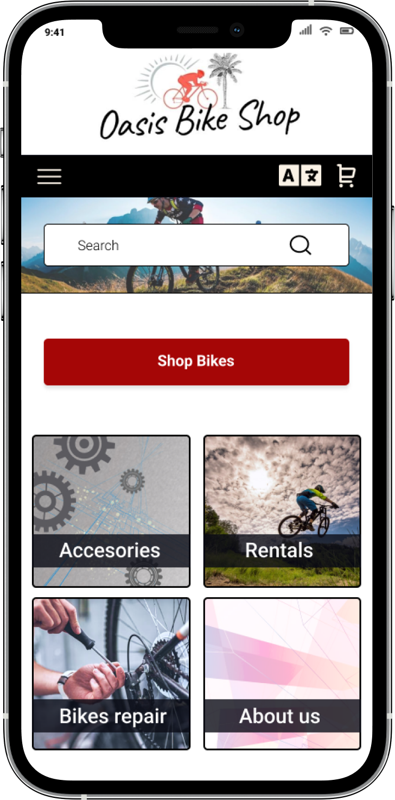
Case Study
Fictional App for a Bicycle Shop in California, made as part of my
Google UX Design Certificate.
My Role:
UX/UI Designer, UX Researcher
Project Duration:
August 2021 - Dec 2021
Responsibilities:
User research, Wireframing, Prototyping, Usability testing.
What's the Problem
A significant number of individuals seeking to purchase a new bicycle often struggle to determine the most suitable option for their needs, primarily due the lack of knowledge, information, and guidance available to them.
The Goal
Our priority is to provide comprehensive support to users in their search for the perfect bicycle by addressing any needs or uncertainties they may have about the product. To fulfill this objective, I have developed a live chat assistance feature wherein a dedicated team member is available to promptly respond to user inquiries and provide personalized guidance throughout their purchasing journey.
The Challenge
Since this was my first UX Design project the whole process was a considerable challenge, including various aspects, from exploring the best ways to gather valuable insights to understand the common challenges people face when choosing and purchasing a bike, to introducing myself with Figma as a wireframing and prototyping tool, and even conducting usability testing. Each step presented an exciting and a unique learning opportunity.
User Research
To identify users paint points I have created a survey with specific questions about the challenges that people face at the moment of purchasing a bike. I utilized social media platforms, where I found a receptive and enthusiastic group of participants who generously shared their insights and experiences by willingly responding to the survey.
User Research Pain Points
1
Lack of Knowledge about brands and type of bikes
2
Poor assistance in physical bike stores
3
Struggle finding the best bike for their budget
4
Struggle Finding great products at the lowest price
Personas
After identifying the users paint points I created two personas to visualize their problems and their needs more easily.
Name: Emily
Age: 36
Hometown: San Diego, CA.
Occupation: Computer Engineer
Emily is a highly busy woman, who is looking for friendly guidance and support in selecting the perfect bike that aligns with her needs because She doesn't have much knowledge about different types of bikes or brands.
Lately, Emily has been feeling very stressed at work. Furthermore, her transition to remote work has led to a more sedentary lifestyle. In an effort to stay fit and active, Emily has made the decision to purchase a bike. Her goal is to engage in daily exercise by riding a comfortable bike with a pleasant seat after work.
GOALS
- Relax her mind
- Keeping fit
- Buy a good quality and comfortable bike for daily exercise
- Ride her bike an hour per day after work
FRUSTRATIONS
- "I don't know anything about types of bikes or branding"
- "Haven't found the store assistants in the bike shops near me to be overly helpful"
Name: John
Age: 25
Hometown: San Marcos, CA.
Occupation: Freelancer Graphic Designer
John is an enthusiastic beginner mountain biker seeking guidance in selecting his new mountain bike. With a limited understanding of the options available within his budget, he's looking for the best fit that aligns with his needs and preferences.
John's interest in mountain biking was sparked by his best friend, who convinced him to embark on exciting biking trails across San Marcos and other stunning locations in California.
Initially, he experimented with rental bikes to get a feel for the sport. As his passion for mountain biking grows, John now contemplates purchasing his own bike. While he seeks a reasonably priced option, he remains optimistic about finding a high-quality bike that aligns perfectly with his needs.
GOALS
- Buy a good mountain bike adjusted to his budget.
- Enjoy more the cycling moments with his best friend.
- Stop using rentals bikes.
FRUSTRATIONS
- "I don't know what is the best bike for my budget"
User Journey Map
After establishing my personas, I proceeded to craft Emily's User Journey Map, a valuable exercise that allowed me to truly empathize with the users and gain insight into their perspectives. .This process enabled me to put myself in their shoes and discern potential solutions to address their challenges effectively.
Low Fidelity Wireframes
My design process started with sketching paper wireframeson, capturing all the immediate ideas that surfaced while contemplating potential solutions. Then, I transitioned to Figma for the development of digital wireframes. Connecting these screens and buttons within the platform facilitated the creation of low-fidelity prototypes.
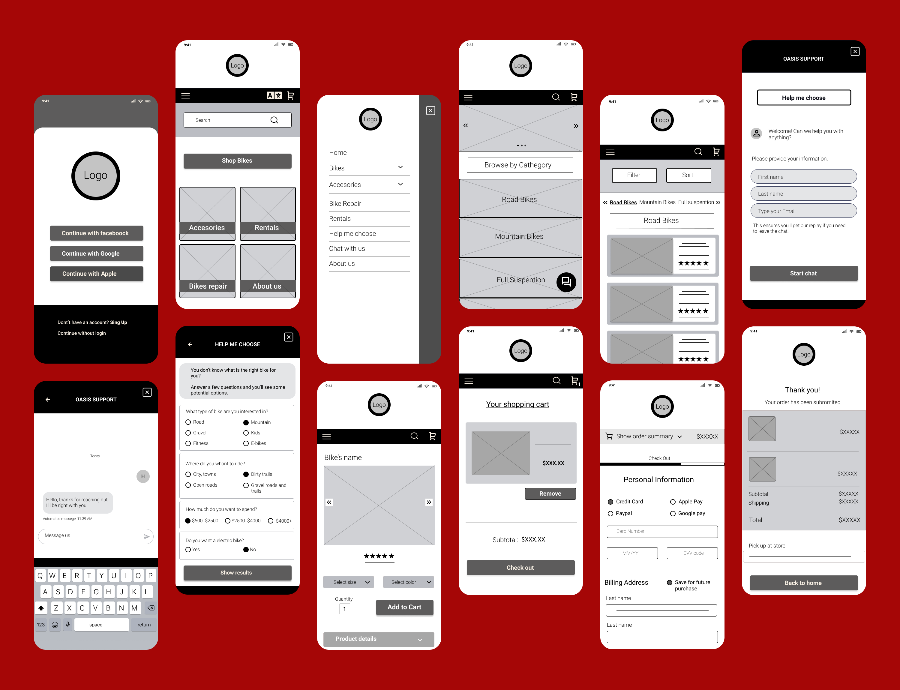Usability Study Low Fidelity Prototype
Once I had my low fidelity prototype I was ready to conduct a usability study. I started by creating a note-taking spreadsheet in which I added some tasks and questions for my participants to analyze how easy is for them to complete the assigned tasks and discover possible problems in the user flow,, being specially focus on the checking out process.
I have conducted this usability study with five participants through Zoom with the permission of being recorded.
Insights
Unable to add more than one item to the shopping cart
An Order Confirmation page is demanded
Unable to see the sum of all items selected
No existence of a number on the basket button
Unable to add more than item to the shopping cart
Participants were unable of select more than one item to the shopping cart. Even though I have created another wireframe where people can add more items, this particular problem should be fixed later when coding for a better user experience.
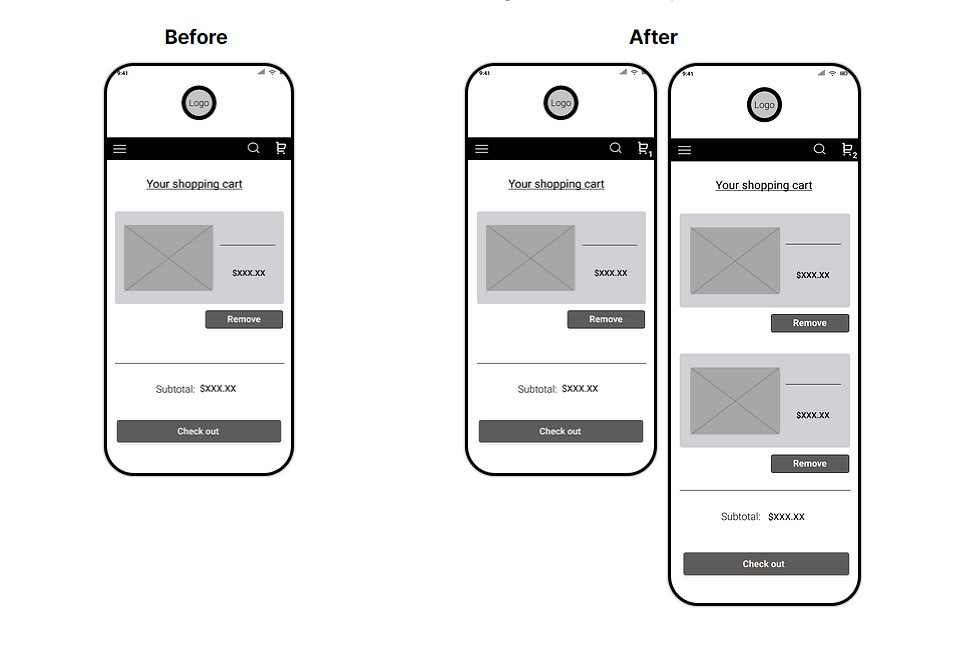An Order Confirmation page is demanded
Participants want to see an Order Confirmation page before procced to the payment and be able to see all the information of their purchases and summary of their order
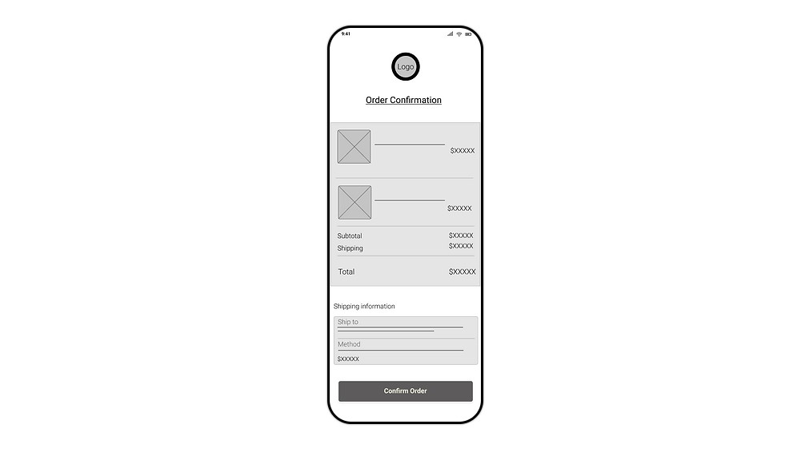Unable to see the sum of all items selected
Participants could not see the summary of the items before or during the check out process. I have added a special button to solve the user flow when checking out that says "Show Order Summary" so they can have that information until procced to the payment.
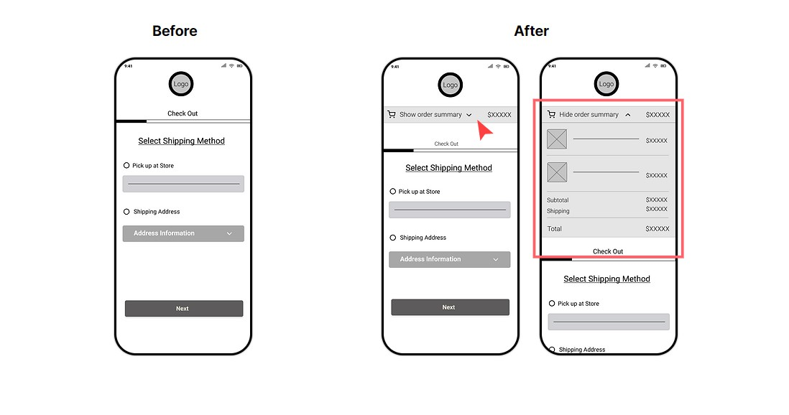No existence of a number on the basket button
Most participants wanted to see the number of items selected on the basket button. Based on this insight I made a few changes and when users click on " Add to cart" button, immediately appear a "thank you" message and a number of the total items on the basket.
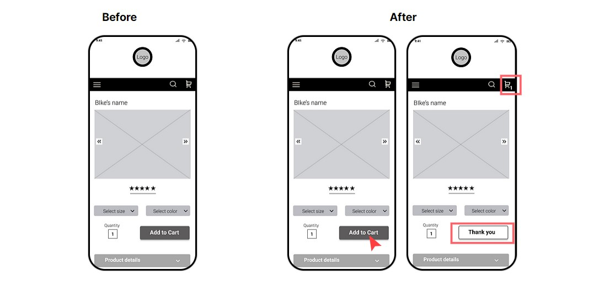High Fidelity Wireframes
Following adjustments informed by the initial usability study, I proceeded to develop high-fidelity wireframes and prototypes. During this phase, I carefully chose the selection of a color palette, the incorporation of icons, and the design of a distinctive logo, all intended to lend a unique and personal brand identity into my App.
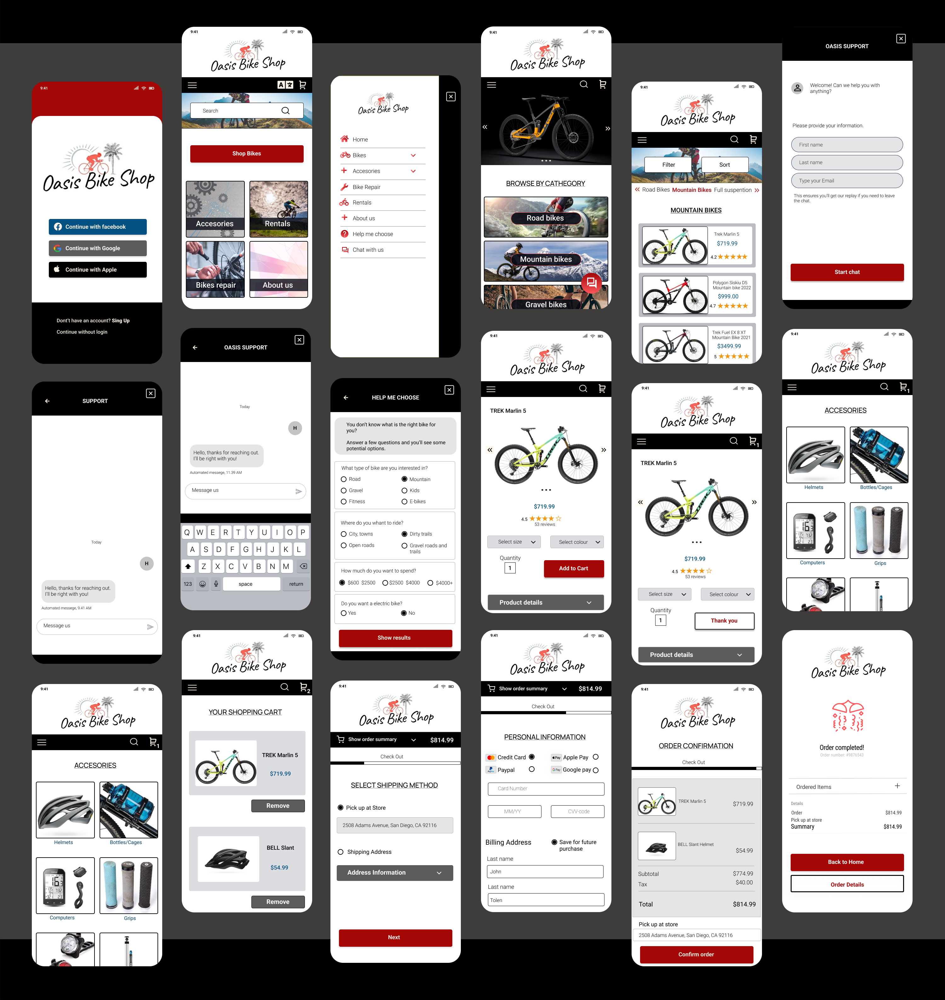Usability Study High Fidelity Prototype
During the initial Usability Study, I was mainly checking out how smoothly users could move through the app and addressing any bumps in the road during the checkout process. This time, my goal was to make sure that all the modifications I made actually worked well and were user-friendly. Plus, I wanted to see if the new Chat assistance and "Help me choose" options I added were doing their job in fixing the issues we had in order to solve the actual problem.
Users don't find accessible to have the "Help me choose"
and "Start Chat" button in the same screen
Most participants want to have the " Help me choose" option separated from the chat assistance.
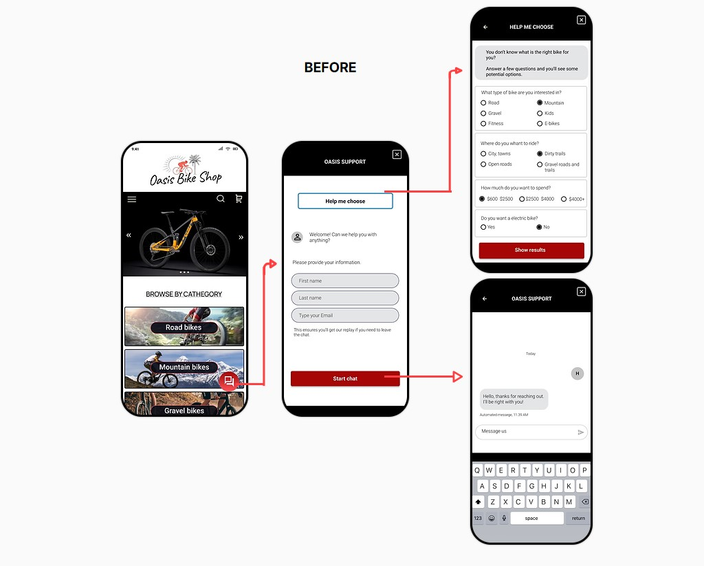I have updated the design in a way that both options were more reachable and less confusing for users to use.
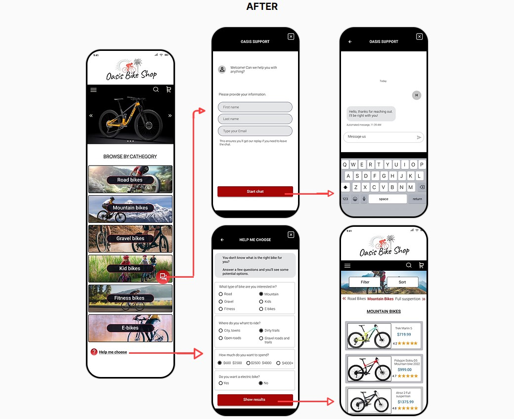Most participants felt the App intuitive and easy to use.
Accessibility
I've incorporated a button on the main page that enables users to switch languages if necessary. This enhancement not only makes the app more user-friendly for individuals from diverse nationalities who might find English challenging, but also broadens our market potential by reaching out to a wider range of users.
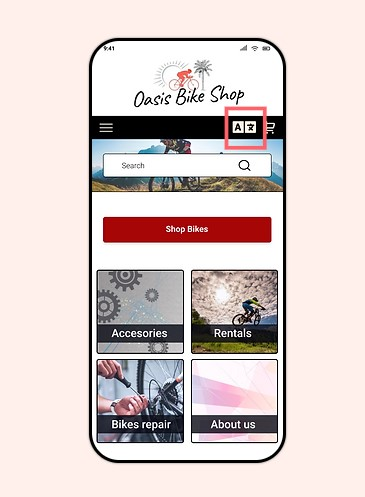In order to enhance usability, I carefully chose primary, secondary, and accent colors that maintain a strong contrast between elements. This deliberate color selection ensures that users with low vision can easily perceive and navigate through my app.
I used different tools to carefully put together colors that work well for everyone and meet accessibility standards. I'm happy to say that the contrast ratio successfully met the desired criteria. "
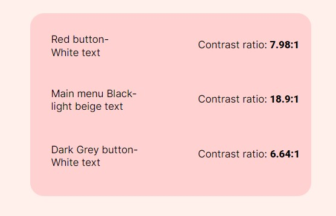